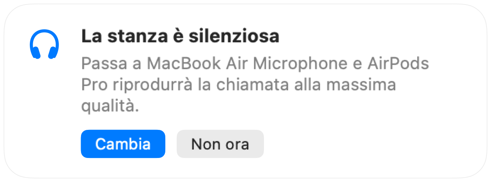

Perché gli AirPods si sentono peggio durante le chiamate su Mac
Entri in chiamata con gli AirPods e l'audio diventa subito piatto e ovattato. Non è un difetto. Quando un'app usa il microfono degli AirPods, il Bluetooth li imposta in una modalità chiamata che riproduce qualsiasi suono a una qualità molto più bassa.
La soluzione è parlare nel microfono del Mac e usare gli AirPods solo per ascoltare. In una stanza silenziosa il microfono del Mac funziona altrettanto bene e l'audio della chiamata torna alla qualità massima. Muffle rileva quando la stanza è silenziosa e ti suggerisce di cambiare.
Mantieni la qualità massima nelle chiamate
- 1
Installa Muffle e lascia attiva l'opzione "Suggerisci il microfono migliore per la stanza".
- 2
Partecipa alla riunione con gli AirPods come fai sempre.
- 3
Quando Muffle ti avvisa che la stanza è silenziosa, clicca su "Cambia".
- 4
Se la stanza diventa rumorosa, Muffle ti suggerirà di nuovo il microfono degli AirPods.

- Il passaggio funziona se l'app della chiamata usa il microfono predefinito di sistema. In Google Meet, Zoom e Teams scegli l'opzione di default o uguale al sistema.
- Resta vicino al Mac mentre usi il suo microfono. Muffle te lo consiglia solo se riesce a sentire chiaramente la tua voce.
Domande frequenti
Perché gli AirPods si sentono male durante le chiamate su Mac?
Il Bluetooth non può trasmettere l'audio stereo in alta qualità e la tua voce contemporaneamente, quindi gli AirPods passano alla modalità chiamata appena il loro microfono entra in funzione.
Muffle cambia i microfoni da solo?
No. Muffle si limita a suggerire il microfono più adatto. Nulla cambia finché non clicchi su "Cambia".